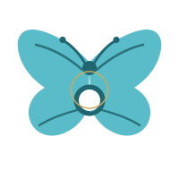
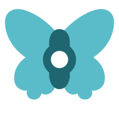

Brand, round two
Eleven emblem concepts in two rounds. No vertical stroke passes through an S anywhere in this
set. Every mark is path geometry on a 200 by 200 grid, carries no live type, and uses only the
palette defined in src/styles/tokens.css. Rationales are in CONCEPTS.md.
She asked for SHF explicitly, more than once. What she rejected in v1 was one stroke, not the idea of a monogram. Concepts 6 and 7 are the direct attempt at making the letters be the thyroid butterfly, and both of them fail at small size for a reason you can see in the 32 and 16 columns. Concept 8 is the resolution: the letters live in the counters of solid wings, so the monogram closes up into a butterfly as it gets smaller instead of falling apart.
| On cream | On ink | |||||||
|---|---|---|---|---|---|---|---|---|
| 256 | 64 | 32 | 16 | 256 | 64 | 32 | 16 | |
| 6. Letters as wings S and its mirror splayed as four wings, H between them. Beautiful large, gone by 64px. | ||||||||
| 7. S wing, F wing The literal reading. Submitted as a documented failure: S and F are not mirror images. | ||||||||
| 8. SHF Butterfly S cut out of the left wing, F out of the right, H as the body with a pearl on the isthmus. Selected | ||||||||
| 9. SHF Inline One line. H and F share a stem, the S stands completely free. | ||||||||
| 10. SHF Stacked The v1 arrangement with the offending stroke simply deleted. | ||||||||
| 11. SHF Chanel The two C construction done with an S and its mirror, closing on an H and F ligature. | ||||||||
Kept as submitted. Concept 1 remains the strongest mark in the set if she decides she does not want letters after all, and its pearl is the device that concept 8 carries forward.
| On cream | On ink | |||||||
|---|---|---|---|---|---|---|---|---|
| 256 | 64 | 32 | 16 | 256 | 64 | 32 | 16 | |
| 1. Her Brooch The thyroid butterfly, made couture. A pearl set where the isthmus sits. |  |
|||||||
| 2. Pearl of Thirteen A pearl is what a body builds around what it cannot expel. Thirteen is her mother's count. | ||||||||
| 3. The Retied Ribbon The awareness ribbon taken off the lapel and tied as a couture bow. | ||||||||
| 4. The Kept Promise A wax seal, thirteen scallops, a bloom pressed into it. A promise that holds. | ||||||||
| 5. The Throat Locket A heart locket worn exactly where the thyroid sits. Fails below 32px. | ||||||||
The SHF Butterfly, shipped as four files in public/brand/. The round lockup is the
thing she described: the SHF mark with the words set around it. The words in both lockups are
outlines drawn from the project's own font files, so neither depends on a font being present.
Same butterfly, same pearl, same two teals, drawn larger and heavier inside the box. The H survives to 32px, the letter counters close below that, and the weight comes from mass and stroke width, never from swapping to the darker teal.
